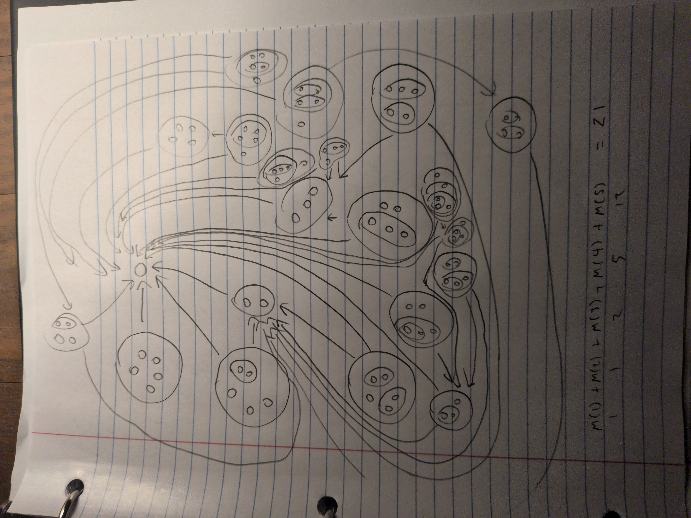

M(n) is the collection of molecules associated with the number n.
M(1)=1, M(2)=1, M(3)=2, M(4)=5, M(5)=12, M(6)=34 is the collection of molecules associated with the number n.
Code to check the sequence: source generator code
Corresponds to OEIS A196545
we can see addition more generally than just a string like "1+2+3", because the "glue", meaning the addition operator no longer needs to be linear
we can imagine sources as human relationships
atoms are like people, molecules are like communities
Prime Factorization is a difficult algebra problem because the number of variables we are solving for is unknown.
Prime Factorization Visualization
Are decomposition charts like below for sources of 5 atoms always planar graphs when the sources have more than 5 atoms?
